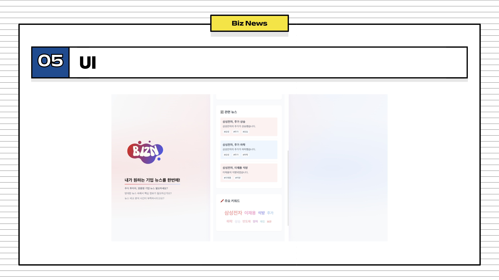
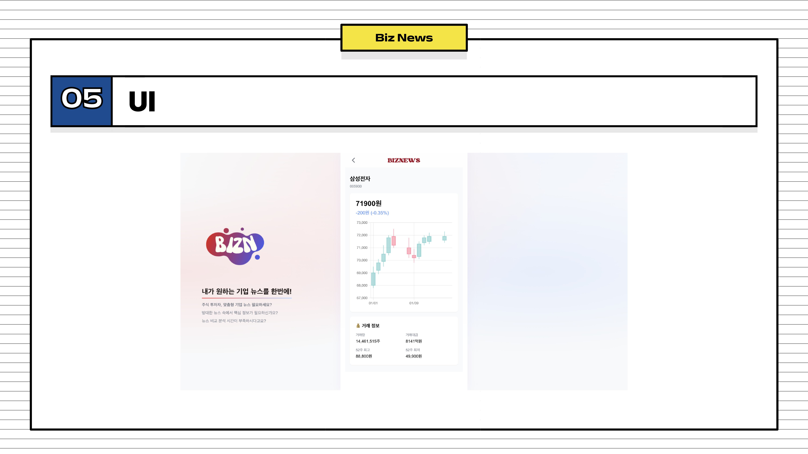

Cloud 2
Backend 1
Frontend 1
AI 2
Kakao Tech Bootcamp Hackathon project. Graph RAG based news recommendation service using Neo4j graph database for intelligent summarization and personalized recommendations. Won 2nd place.
48h
Hackathon
Full stack in 2 days
2nd
Place
Kakao Tech Bootcamp
Dual DB
Architecture
MySQL + Neo4j
What I Did
Cloud Infrastructure
AWS EC2 + RDS + Docker + Nginx
CI/CD & Data Pipeline
GitHub Actions + Public Data API integration
Troubleshooting
48h Time Constraint
Zero room for deployment errors
Dual Database Architecture
Neo4j + MySQL hybrid storage
Key Features

AI-powered news article summarization

Neo4j graph visualization of keyword relationships

Extracted keywords and related company information

Real-time stock market data integration